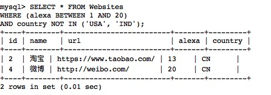

SQL BETWEEN演算子
BETWEEN 演算子は、2つの値の間のデータ範囲内の値を選択します。これらの値は、数値、テキスト、または日付にすることができます。
SQL BETWEEN 構文
SELECT column1, column2, ... FROM table_name WHERE column BETWEEN value1 AND value2;
パラメータの説明：
- column1, column2, ...：選択するフィールド名です。複数のフィールドを指定できます。フィールド名を指定しない場合は、すべてのフィールドが選択されます。
- table_name：クエリするテーブル名です。
- column：クエリするフィールド名です。
- value1：範囲の開始値です。
- value2：範囲の終了値です。
デモデータベース
このチュートリアルでは、RUNOOB サンプルデータベースを使用します。
以下は "Websites" テーブルから選択したデータです：
mysql> SELECT * FROM Websites; +----+---------------+---------------------------+-------+---------+ | id | name | url | alexa | country | +----+---------------+---------------------------+-------+---------+ | 1 | Google | https://www.google.cm/ | 1 | USA | | 2 | 淘宝 | https://www.taobao.com/ | 13 | CN | | 3 | 菜鸟教程 | http://www.runoob.com/ | 5000 | USA | | 4 | 微博 | http://weibo.com/ | 20 | CN | | 5 | Facebook | https://www.facebook.com/ | 3 | USA | | 7 | stackoverflow | http://stackoverflow.com/ | 0 | IND | +----+---------------+---------------------------+-------+---------+
BETWEEN 演算子の例
次の SQL 文は、alexa が 1 から 20 の間にあるすべてのウェブサイトを選択します：
例
WHERE alexa BETWEEN 1 AND 20;
実行出力結果：

NOT BETWEEN 演算子の例
上記の例の範囲内にないウェブサイトを表示するには、NOT BETWEEN を使用します：
例
WHERE alexa NOT BETWEEN 1 AND 20;
実行出力結果：

IN を使用した BETWEEN 演算子の例
次の SQL 文は、alexa が 1 から 20 の間であるが、country が USA と IND ではないすべてのウェブサイトを選択します：
例
WHERE (alexa BETWEEN 1 AND 20)
AND country NOT IN ('USA', 'IND');
実行出力結果：

テキスト値を使用した BETWEEN 演算子の例
次の SQL 文は、name が 'A' と 'H' の間の文字で始まるすべてのウェブサイトを選択します：
例
WHERE name BETWEEN 'A' AND 'H';
実行出力結果：

テキスト値を使用した NOT BETWEEN 演算子の例
次の SQL 文は、name が 'A' と 'H' の間の文字で始まらないすべてのウェブサイトを選択します：
例
WHERE name NOT BETWEEN 'A' AND 'H';
実行出力結果：

サンプルテーブル
以下は "access_log" ウェブサイトアクセス記録テーブルのデータです。ここで：
- aid：は自動増分 id です。
- site_id：は対応する websites テーブルのウェブサイト id です。
- count：アクセス回数です。
- date：はアクセス日付です。
mysql> SELECT * FROM access_log; +-----+---------+-------+------------+ | aid | site_id | count | date | +-----+---------+-------+------------+ | 1 | 1 | 45 | 2016-05-10 | | 2 | 3 | 100 | 2016-05-13 | | 3 | 1 | 230 | 2016-05-14 | | 4 | 2 | 10 | 2016-05-14 | | 5 | 5 | 205 | 2016-05-14 | | 6 | 4 | 13 | 2016-05-15 | | 7 | 3 | 220 | 2016-05-15 | | 8 | 5 | 545 | 2016-05-16 | | 9 | 3 | 201 | 2016-05-17 | +-----+---------+-------+------------+ 9 rows in set (0.00 sec)
このチュートリアルで使用する access_log テーブルの SQL ファイル：access_log.sql。
日付値を使用した BETWEEN 演算子の例
次の SQL 文は、date が '2016-05-10' と '2016-05-14' の間にあるすべてのアクセス記録を選択します：
例
WHERE date BETWEEN '2016-05-10' AND '2016-05-14';
実行出力結果：

|
異なるデータベースでは、BETWEEN 演算子は異なる結果を生じることに注意してください！ したがって、お使いのデータベースが BETWEEN 演算子をどのように処理するかを確認してください！ |